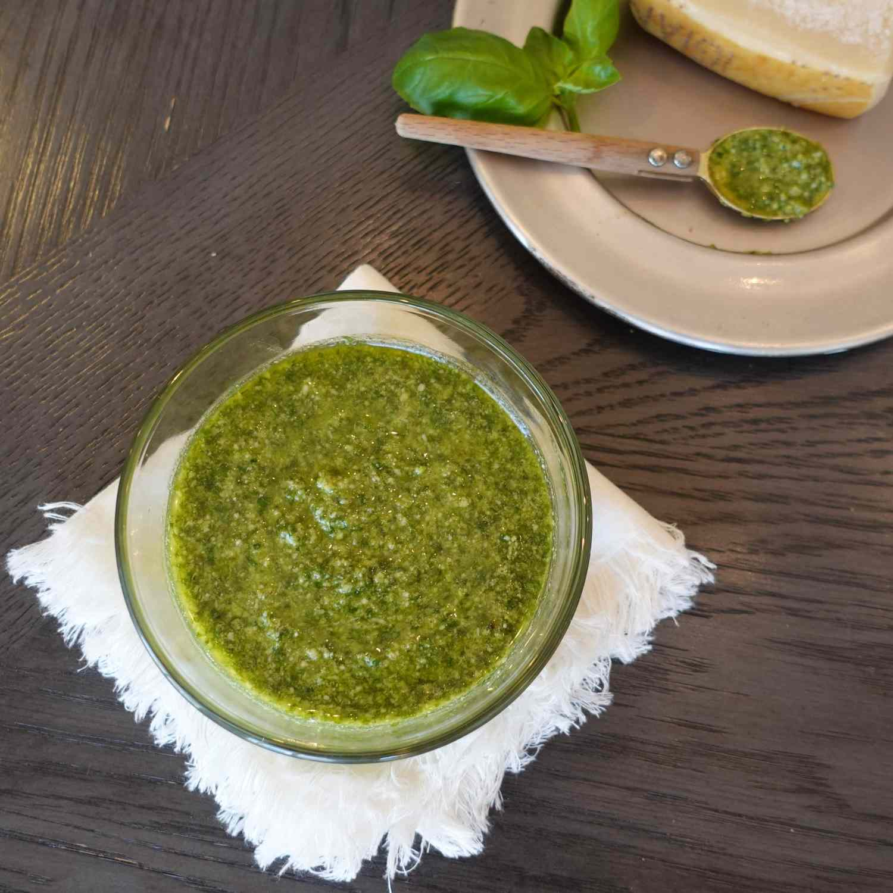

Home
Pesto

Ingredients
- 3 cups packed fresh basil leaves, washed and thoroughly dried
- 2 large cloves garlic
- ¼ cup pine nuts, lightly toasted
- ½ teaspoon kosher salt
- ½ cup extra-virgin olive oil
- ½ cup freshly grated Parmesan cheese
- 2 teaspoons freshly squeezed lemon juice
Steps
- Pulse basil and garlic in a food processor about 8 times until finely chopped.
- Add toasted pine nuts and salt; turn processor on low and drizzle olive oil through the chute until everything is incorporated.
- Add Parmesan cheese and lemon juice; pulse 2 times.
- Toast your pine nuts by placing them in a small, dry skillet over medium heat. Cook, tossing often, until fragrant and very lightly toasted, about 5 minutes. Remove from the heat and let cool before using.